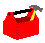

Task
Manager
The Kernel Task Manager, also know as TaskMan, allows
you to run tasks in the background while you continue working on your system.
A TaskMan program, called the Manager, runs at all times in the background.
The Manager monitors your system constantly looking for tasks requested
by foreground jobs.
Foreground jobs cannot start any background jobs. Instead, they call
a TaskMan API to queue job requests in the TASK and SCHEDULE files. The
Manager monitors the schedule file and initiates the background jobs as
needed. Submanagers are the processes that actually run tasks. The Manager
starts submanagers whenever more are needed to handle the current workload
of tasks. Each task performs the work it was created to do and then quits,
returning control back to the submanager that started it. The submanager
will wait around for a period of time for new tasks so that the Manager
won't have to start a new submanager. If no new tasks arrives during a
designed time, the submanager will quit.
TaskMan
Management Menu
Kernel provides system managers with a set of tools to
manage tasks. The TaskMan Management Menu is the main entry point into
Taskman options. It contains the following options:
Schedule/Unschedule
Options - schedule options that run regularly and unschedule an option
that's no longer needed.
One
time Options Queue - queue a task to run only once without affecting
the option's normal schedule.
Taskman
Management Utilities - provides several options to set up, monitor,
and modify TaskMan environment.
List
Tasks - choose between several useful ways of displaying tasks.
Dequeue
Tasks - unschedule a task so that the task remains in the TASKS file,
but is no longer scheduled to run.
Requeue
Tasks - reschedule a task that has been unscheduled.
Delete
Tasks - unschedule a task and delete the task from the TASK file.
Print
Options that are Scheduled to run - lists all currently scheduled options
on your system.
Cleanup
Task List - remove a task entry from a task list for a job that is
no longer running.
Print
Options Recommended for Queuing - Displays all options that are recommended
for scheduling by the developer.
TaskMan
Management Utilities
A submenu on the TaskMan Management Menu, called the
Taskman Management Utilities, provides several options to setup, monitor,
and modify the TaskMan environment. This menu contains the following options:
Monitor
TaskMan - displays the current state of TaskMan and offers you many
ways to get more information.
Check
TaskMan's Environment - performs all of the checks that the Task Manager
does and identifies any problem with the environment.
Edit
TaskMan Parameters - edit the TaskMan parameter files.
Restart
Task Manager - ability to restart TaskMan if the Manager crashes or
is stopped.
Place
TaskMan in a WAIT State - ability to turn the Manager's activities
off without having to completely shut down the Manager.
Remove
TaskMan from WAIT State - ability to turn the Manager's activities
back on to process tasks and allow submanagers to recycle.
Stop
Task Manager - provides a clean way of stopping Task Manager from within
the menu system.
TaskMan
Error Logs - choose between several useful ways of displaying and managing
errors caused by tasks.
Clean
Task File - clean out the Task Log removing all entries for tasks that
have completed, have been rejected, or have aborted with an error.
SYNC
flag file control - remove a SYNC FLAG entry from the file and delete
all waiting tasks with the same SYNC FLAG
Programmer
API's
Kernel provides programmers with API callable entry points
to create and schedule tasks. Once you become familiar with Task Manager's
queueing system, you can increase productivity by using some of TaskMan's
special features.
|